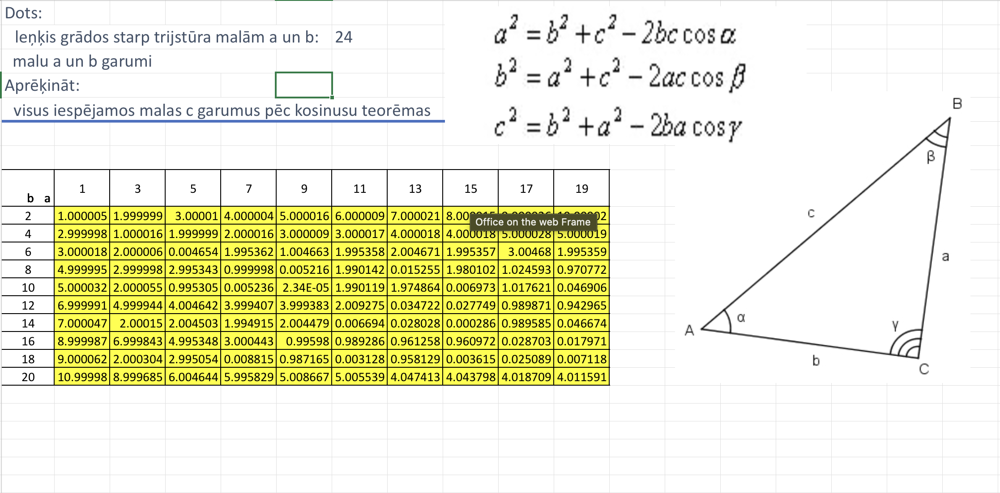

Ko es apgūvu datorikas stundas?
Kā stradāt ar Microsoft Office
Kā strādāt ar Gimp un TinkerCad
Kā strādāt ar video redaktoriem

Microsoft Office ir programmatūras komplekts, kas ietver dažādas lietojumprogrammas, piemēram, Word, Excel, PowerPoint un Outlook. Šīs programmas tiek plaši izmantotas gan personīgajā, gan profesionālajā dzīvē, lai veiktu dažādus uzdevumus, piemēram, dokumentu izveidi, datu analīzi, prezentāciju veidošanu un e-pasta pārvaldību.